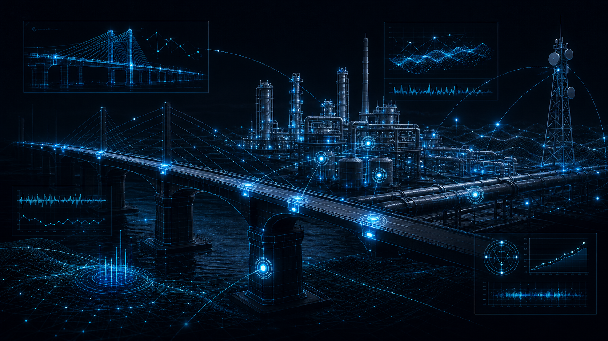

DEFENSE
防衛
ISR、自律システム、指揮統制支援。通信や電力が限られる過酷な環境下でも、途切れない認識と判断を提供します。
01Domains
DEFENSE
ISR、自律システム、指揮統制支援。通信や電力が限られる過酷な環境下でも、途切れない認識と判断を提供します。

CRITICAL INFRASTRUCTURE
構造ヘルスモニタリング、予知保全、レジリエンス。橋梁・プラント・通信網など、社会の基盤を止めずに守り抜きます。
02Products
03Technology
Get in touch
省庁・事業者・投資家・技術者の皆さまへ。導入のご相談、共同研究、採用に関するお問い合わせを承っています。